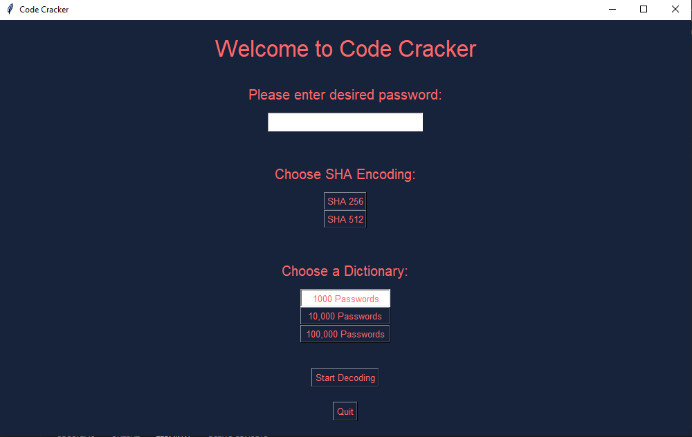
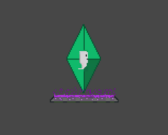
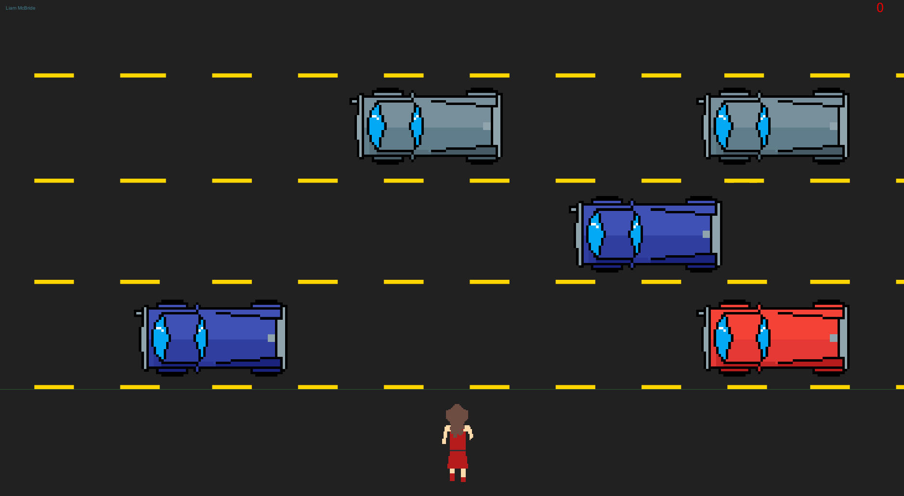
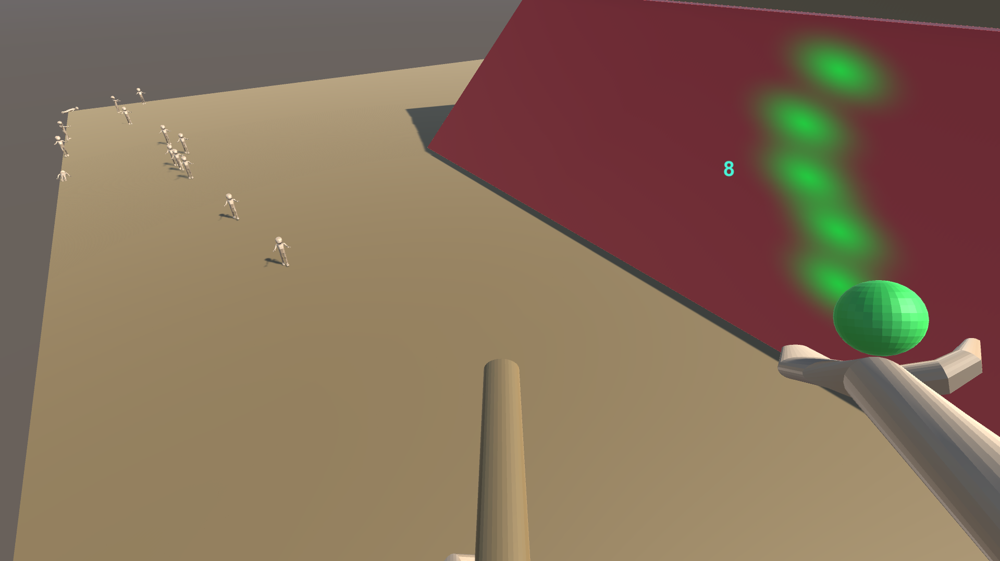

I'm a passionate developer
Who loves making whatever I can with code.
Not limited to:
- Websites
- Video Games
- Bots
- APIs
My experience in the industry
Consists of my 9 month internship with the Exeleration Center, where I consulted for Rhythm. With Rhythm I helped the existing team further develop their customer support portal. This involved working with the Django backend and React frontend. I was able to gain valuable experience on both backend and frontend.
My learning wasn't just about code though. I learned a lot about scrum and agile development, even completing a Certified Scrum Master course. Beyond that I grew in many other areas, like how to conduct myself on a developer team. How to interact successfully with project managers and QA testers. As well as how to seek out help effectively. Through the experience I spent about half of my developing time pair programming, which further added to my learning.
I fell in love with code
Early on in freshman year of high school. I know it sounds cliche to “fall in love with code” but it's the truth! Coding isn’t just a job of mine, it’s a passion, an art form, and a way to express the ideas over-crowding my head. I quickly took to programming in my first class, doing small Visual Basic projects. After that I learned C# and Unity, which my passion of game design further propelled my interest in programming.
Now why should anyone care about me loving code? Well if you're paying my page a social visit then you already have a great topic to talk to me about! But if you’re a company viewing this then my passion for code and developing has a few key benefits:
Learning new languages + tools is an exciting challenge that I will jump at the chance to do.
My endurance and dedication to solving a problem goes far beyond just wanting to do a good job. It is my passion to fix that problem.
I’ll be excited to come to work and contribute to a project. A little more positive energy on a team is never a bad thing.
I’ll be looking for ways to step up and contribute more to a project, whether that's through code or ideas.
Resume
Personal Profile
Undergraduate, Sophomore at Virginia Tech pursuing Computer Science. Passionate about
programming and software development. Previously experience with game design using C#,
Unity, and Blender. Currently focused on projects in Java, Python, and utilizing APIs.
Personable and gets along with peers. Always learning more and pursuing multiple interests.
Experience
Paid Internship at Ubisoft (05/2019 - 08/2019)
Customer support agent dealing with fraud detection, account verification, and other customer
issues.
Black Falcons (Ubuntu and Cisco Packet Tracer Specialist, 05/2018 - 05/2020)
Cyber Patriots highschool club hosted by the Airforce. Deals with cybersecurity and advanced IT
work. Was a team lead. Team’s Ubuntu and Networking expert. Placed 2nd at state level.
Pizza Hut Driver (05/2020 - 07/2020)
Delivery driver along with janitorial and food prep work.
Exelaration Software Engineer Intern (09/2021 - Current)
Working as a consultant for Rhythm’s Customer Support portal. Utilizing Django, React,
Typescript, and Docker to perform end-to-end modifications on the existing system.
Education
Undergraduate at Virginia Tech(08/2020 - Current)
Class of 2024. Computer Science Major.
Cisco Networking Academy Packet Tracer(2019)
In-depth configuration of LAN networks.
Unity Envision course at George Mason University(07/2018)
College-level course on Game Design, Unity, and C#.
Skills
Languages
C#, Python, Java, JavaScript, and TypeScript.
Tools and Frameworks
Unity, Blender, Git, Django, React, and Docker.
Linux
Ubuntu
Activities
Running
Here's just a little bit of what I've worked on...

Code Cracker
This was a school project where you needed to create code that would use SHA to encrypt a password. The code then uses several password dictionaries to attempt and crack the code. The time to crack the password is recorded and displayed to the user.
View Project on GitHub

Lively Spirit
Experience a platformer that doesn't punish you for dying! A fun game where you transfer your spirit from body to body in order to keep it alive, in order to transfer your body you've got to cause some havoc, whether that's smashing into a car, giant spike, or even a plane! Enjoy the fun gameplay and pixel art that will surely make you feel better about your own artistic skill! Created in 48 hours for Ludum Dare 46 with the theme 'Keep it Alive'.
View Project on Itch.io

Gatsby Game
This was a simple game made using Unity. It's a copy of frogger except you're Myrtle trying not to get hit by Gatsby's car. This was made for an English project. It was a lot of fun to create the pixel assets.
View Project on Itch.io

Crucible
This was one of the first complete games I ever made. I made it for an English class assignment about the Salem Witch Trials. You can fly around as a witch and attack common-folk. I wouldn't say this is a representation of my current skill. I've come a long way since making this, but it's quite fun to show some of my earlier projects.
View Project on GitHub